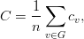

Compute average clustering coefficient.
A clustering coefficient for the whole graph is the average,

where is the number of nodes in .
| Parameters: | G : graph
|
|---|---|
| Returns: | out : float
|
Notes
This is a space saving routine; it might be faster to use clustering to get a list and then take the average.